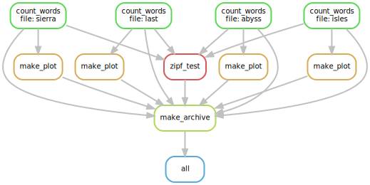

Pipelines as Python code
Despite our efforts, our pipeline still has repeated content,
for instance the names of output files/dependencies.
Our zipf_test rule, for instance, is extremely clunky.
What happens if we want to analyze books/sierra.txt as well?
We’d have to update everything!
rule zipf_test:
input: 'zipf_test.py', 'abyss.dat', 'last.dat', 'isles.dat'
output: 'results.txt'
shell: 'python {input[0]} {input[1]} {input[2]} {input[3]} > {output}'
First, let’s cut down on a little bit of the clunkiness of the “shell” rule. One thing you’ve probably noticed is that all of our rules are using Python strings. Other data structures work too - let’s try a list:
rule zipf_test:
input:
zipf='zipf_test.py',
books=['abyss.dat', 'last.dat', 'isles.dat']
output: 'results.txt'
shell: 'python {input.zipf} {input.books} > {output}'
(snakemake clean and snakemake -p should show that the pipeline still works!)
This illustrates a key feature of Snakemake.
Snakefiles are just Python code.
We can make our list into a variable to demonstrate this.
Let’s create the variable DATS and use it in our zipf_test and dats rules.
DATS=['abyss.dat', 'last.dat', 'isles.dat']
# generate summary table
rule zipf_test:
input:
zipf='zipf_test.py',
books=DATS
output: 'results.txt'
shell: 'python {input.zipf} {input.books} > {output}'
rule dats:
input: DATS
Try re-creating both the dats and results.txt targets
(run snakemake clean in between).
When are Snakefiles executed?
The last example illustrated that we can use arbitrary Python code in our Snakefile. It’s important to understand when this code gets executed. Let’s add a print statement to the top of our Snakefile.
print('Snakefile is being executed!')
DATS=['abyss.dat', 'last.dat', 'isles.dat']
# generate summary table
rule zipf_test:
input:
# more output below
Now let’s clean up our workspace with snakemake clean
snakemake clean
Snakefile is being executed!
Provided cores: 1
Rules claiming more threads will be scaled down.
Job counts:
count jobs
1 clean
1
rule clean:
jobid: 0
Finished job 0.
1 of 1 steps (100%) done
Now let’s re-run the pipeline…
snakemake
Snakefile is being executed!
Provided cores: 1
Rules claiming more threads will be scaled down.
Job counts:
count jobs
3 count_words
1 zipf_test
4
rule count_words:
input: wordcount.py, books/last.txt
output: last.dat
jobid: 3
wildcards: file=last
Finished job 3.
1 of 4 steps (25%) done
rule count_words:
input: wordcount.py, books/abyss.txt
output: abyss.dat
jobid: 1
wildcards: file=abyss
Finished job 1.
2 of 4 steps (50%) done
rule count_words:
input: wordcount.py, books/isles.txt
output: isles.dat
jobid: 2
wildcards: file=isles
Finished job 2.
3 of 4 steps (75%) done
rule zipf_test:
input: zipf_test.py, abyss.dat, last.dat, isles.dat
output: results.txt
jobid: 0
Finished job 0.
4 of 4 steps (100%) done
Let’s do a dry-run:
snakemake -n
Snakefile is being executed!
Nothing to be done.
In every case, the print() statement ran before any of the actual
pipeline code was run.
What we can take away from this is that Snakemake excutes the entire Snakefile
every time we run snakemake (regardless of if it’s a dry run!).
Because of this, we need to be careful,
and only put tasks that do “real work” (changing files on disk) inside rules.
Using functions in Snakefiles
In our example here, we only have 4 books.
But what if we had 700 books to be processed?
It would be a massive effort to update our DATS variable to
add the name of every single book’s corresponding .dat filename.
Fortunately, Snakemake ships with several functions that make working with
large numbers of files much easier.
The two most helpful ones are glob_wildcards() and expand().
Let’s start an ipython session to see how they work:
ipython3
Python 3.6.1 (default, Jun 27 2017, 14:35:15)
Type "copyright", "credits" or "license" for more information.
IPython 5.3.0 -- An enhanced Interactive Python.
? -> Introduction and overview of IPython's features.
%quickref -> Quick reference.
help -> Python's own help system.
object? -> Details about 'object', use 'object??' for extra details.
In this example, we will import these Snakemake functions directly in our ipython session. It is not necessary however, to import these functions within your Snakefile - these functions are always imported for you.
from snakemake.io import *
Generating file names with expand()
The first function we’ll use is expand().
expand() is used quite literally,
to expand a snakemake wildcard(s) into a set of filenames.
expand('folder/{wildcard1}_{wildcard2}.txt',
wildcard1=['a', 'b', 'c'],
wildcard2=[1, 2, 3])
['folder/a_1.txt',
'folder/a_2.txt',
'folder/a_3.txt',
'folder/b_1.txt',
'folder/b_2.txt',
'folder/b_3.txt',
'folder/c_1.txt',
'folder/c_2.txt',
'folder/c_3.txt']
In this case, expand() created every possible combination of filenames from the two wildcards.
Useful! Of course, this still leaves us needing somehow get the values for
wildcard1 and wildcard2 in the first place.
Get wildcard values with glob_wildcards()
To get a set of wildcards from a list of files, we can use the
glob_wildcards() function.
Let’s try grabbing all of the book titles in our books folder.
glob_wildcards('books/{example}.txt')
Wildcards(example=['isles', 'last', 'abyss', 'sierra'])
glob_wildcards() returns a named tuple as output.
In this case, there is only one wildcard, {example}.
We can extract the values for name by getting the example
property from the output of glob_wildcards()
glob_wildcards('books/{example}.txt').example
['isles', 'last', 'abyss', 'sierra']
Putting it all together
Using the expand() and glob_wildcards() functions,
modify the pipeline so that it automatically detects and analyzes
all the files in the books/ folder.
Using Python code as actions
One very useful feature of Snakemake is the ability to execute Python code
instead of just shell commands.
Instead of shell: as an action, we can use run: instead.
Add the following to our snakefile:
# at the top of the file
import os
import glob
# add this wherever
rule print_book_names:
run:
print('These are all the book names:')
for book in glob.glob('books/*.txt'):
print(book)
Upon execution of the corresponding rule, Snakemake dutifully runs our Python code
in the run: block:
snakemake print_book_names
Provided cores: 1
Rules claiming more threads will be scaled down.
Job counts:
count jobs
1 print_book_names
1
rule print_book_names:
jobid: 0
These are all the book names:
books/isles.txt
books/last.txt
books/abyss.txt
books/sierra.txt
Finished job 0.
1 of 1 steps (100%) done
Exercise - Moving output locations
Alter the rules in your Snakefile so that the .dat files are created in
their own dats/ folder.
Note that creating this folder beforehand is unnecessary.
Snakemake automatically create any folders for you, as needed.
Exercise - Creating PNGs
Add new rules and update existing rules to:
- Create
.pngfiles from.datfiles usingplotcount.py. - Remove all auto-generated files (
.dat,.png,results.txt).
Finally, many Snakefiles define a default target called all as first target,
that will build what the Snakefile has been written to build (e.g. in
our case, the .png files and the results.txt file).
Add an all target to your Snakefile (Hint: this rule
has the results.txt file and the .png files as dependencies, but
no actions). With that in place, instead of running make
results.txt, you should now run snakemake all, or just simply
snakemake.
Exercise - Creating an archive
Update your pipeline to:
- Create an archive,
zipf_analysis.tar.gz, to hold all our.datfiles, plots, and the Zipf summary table. - Update
allto expectzipf_analysis.tar.gzas input. - Remove
zipf_analysis.tar.gzwhensnakemake cleanis called.
The syntax to create an archive is shown below:
tar -czvf zipf_analysis.tar.gz file1 directory2 file3 etc
After these excercises our final workflow should look something like the following:

Exercise - Adding more books
We can now do a better job at testing Zipf’s rule by adding more books. The books we have used come from the Project Gutenberg website. Project Gutenberg offers thousands of free ebooks to download.
Exercise instructions:
- go to Project Gutenberg and use the search box to find another book, for example ‘The Picture of Dorian Gray’ from Oscar Wilde.
- download the ‘Plain Text UTF-8’ version and save it to the
booksfolder; choose a short name for the file - optionally, open the file in a text editor and remove extraneous text at the beginning and end
(look for the phrase
End of Project Gutenberg's [title], by [author]) - run
snakemakeand check that the correct commands are run - check the results.txt file to see how this book compares to the others